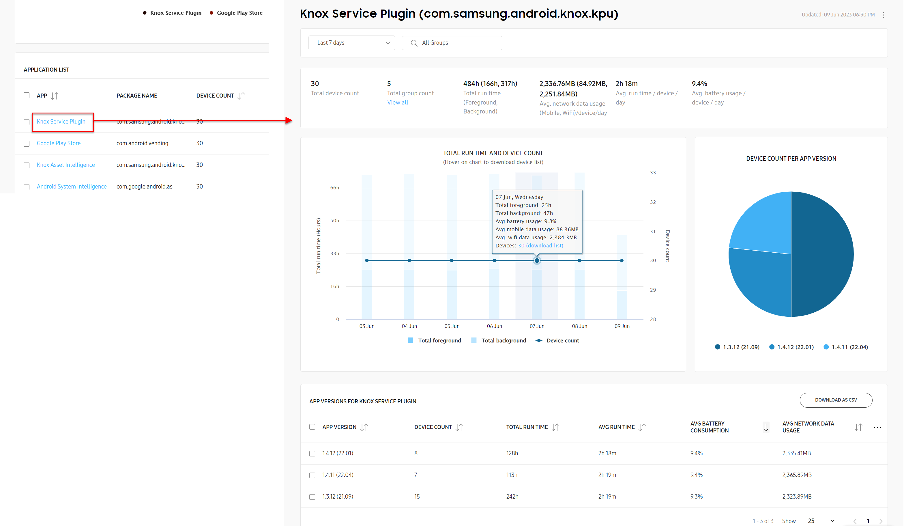

Get started with Knox Asset Intelligence
Last updated September 6th, 2023
Knox Asset Intelligence is a data analytics solution that turns device usage information into actionable business insights. With Knox Asset Intelligence, IT admins can monitor the health and status of their device fleet’s apps, batteries, and network connectivity through a powerful and highly-customizable dashboard.
This tutorial walks you through the basics of Knox Asset Intelligence. By the end of this tutorial, you’ll have learned how to:
- Launch Knox Asset Intelligence
- Add devices to your account
- Enroll devices
- Use the Dashboard
Prerequisites
Before proceeding with this tutorial, ensure that you have the following:
- Access to the Knox Admin Portal. See Set up Samsung Knox with a Samsung account if you don’t already have access.
- A Knox Suite or standalone Knox Asset Intelligence license. See Manage licenses to learn how to get a license if you don’t already have one.
Step 1: Launch Knox Asset Intelligence
If this is your first time using Knox Asset Intelligence, you may need to enable the service from the Knox Admin Portal. To do this:
- Go to SamsungKnox.com, then click Sign in > Sign in with Samsung account.
- In the Knox Admin Portal, go to your account settings by clicking your account icon in the top-right corner of the console, then clicking Settings.
- On the Settings page, click SHOW/HIDE SERVICES, then select Knox Asset Intelligence and click CONFIRM.
Once Knox Asset Intelligence is added to the Knox Admin Portal, you can launch the service from the left navigation pane.
Step 2: Upload devices to your account
In order to view business insights for your device fleet, you must add those devices to the Knox Asset Intelligence console. There are two ways to add devices to the console:
- Through a reseller
- Through a CSV file upload
Reseller method
If you purchased your devices through a Samsung-approved reseller, they can upload device IMEIs directly to your Knox Asset Intelligence console. To allow resellers to upload devices to your account, simply register the resellers with your Knox Asset Intelligence account. Once registered, provide the resellers with your Knox customer ID, which can be found by clicking your account icon in the top-right corner of the console.
Bulk upload method
If you purchased your devices without a reseller, you will have to manually upload the IMEIs to your Knox Asset Intelligence console. To do this, go to the Devices page, select the BULK ACTIONS tab, then click UPLOAD DEVICES. Use the provided CSV template to upload your device IMEIs to your console. Review Bulk upload or delete devices for more information.
Step 3: Enroll your devices
After IMEIs are added to your console, you’ll need to ensure that data actually gets sent from the devices to the Knox Asset Intelligence server. To do this, you’ll need to enroll the devices in the Knox Asset Intelligence service.
There are several ways to enroll devices:
- Install the agent from Google Play.
- Deploy the agent with an EMM.
- Enroll through OOBE (Out-of-box-experience).
Review the Enroll devices guide for instructions on each method.
Once your devices are enrolled, you can start viewing business insights for them in your Knox Asset Intelligence dashboard.
Step 4: Use the Dashboard
Now that your devices are enrolled, you can start viewing data in the Knox Asset Intelligence Dashboard — a hub for all your device insights. Here is where you’ll find at-a-glance views of your fleet’s health, organized into easy-to-use tiles.
Launching your Dashboard is easy — simply click Dashboard from the left navigation pane. By default, the Dashboard displays tiles related to network, app, and battery health, all together in the same view, without any additional setup.
The Device statuses tile is where you can see how many devices you have in the Knox Asset Intelligence console, and how many of those devices are enrolled and actively reporting data to the server.
The following statuses are shown in this tile:
- Pending — Reseller-uploaded devices are awaiting your approval. Approve uploads by going to the Devices page’s Uploads tab.
- Not enrolled — Devices uploaded to the console but not yet enrolled in the Knox Asset Intelligence server. See Enroll devices to learn more.
- Failed to enroll — Devices that encountered an error during enrollment. Check whether the license is valid, or whether the device’s Knox version is valid. You can check the detailed reason for failure by going to the Devices page and selecting ACTIONS > View device log. If you’re still experiencing enrollment issues, please visit Samsung Knox Support.
- Enrolled — All devices enrolled in Knox Asset Intelligence that have consumed a license seat.
- Active — Enrolled devices that are working as expected.
- Inactive — Enrolled devices that have not communicated with the Knox Asset Intelligence server for 7 or more consecutive days. Checks whether devices are powered off or not connected to a mobile network.
- Expired — The license associated with the device is expired, and the device is not reporting any data. Renew your Knox Asset Intelligence associated license.
Next to the Device Statuses tile, Today’s issues gives you an at-a-glance view of device issues that occurred during the day. These insights help you take immediate action on issues and avoid device downtime.
If you want to customize the dashboard to only display tiles that matter to your organization, you can do so in the Dashboard settings page. To do this:
-
Click Settings in the top-right corner of the Dashboard.
-
On the Settings page, click the CUSTOMIZE tab, then select or clear the tiles that you’re interested in seeing on your dashboard.
The Device statuses and Today’s issues tiles can’t be removed from the Dashboard.
-
Click SAVE to return to the Dashboard page.
-
Back on the Dashboard page, use the date selector to set a date range for which you want to see device data. The selection is global, which means you’ll see data for the same date range on all tiles.
-
Rearrange your tiles by clicking and dragging anywhere along the top of each tile.
Dashboard tiles explained
With your Dashboard all set up, you can now interact with the different tiles to get insight into your fleet’s performance. Most Dashboard tiles have a similar structure consisting of:
- The main data set displaying a table or chart of the top issues or events.
- An option to either view expanded data insights or Dashboard settings.
- A notification section that lets you know when data thresholds are reached, as well as other important information related to your insight. See Dashboard settings: Thresholds for more information.
- A date and time stamp for the last update, and a manual refresh button to request new data. See Data refresh cycles to learn more.
Main tile view
Most dashboard tiles display their key data insights in the form of charts, tables, or lists. Some tiles like the Apps with most issues provide both a chart and a list to provide greater detail into the insight
Just below the main data set, you might see alerts, notifications, or other important information related to your insight. Some dashboard insights display notifications when critical event thresholds are reached (for example, when apps use more than 100MB of mobile data per day), while others display the top issue, app, or group contributing to the insight (for example, letting you know the most used app across your entire fleet).
Near the bottom-right corner of each tile, you’ll see the last date and time data got refreshed. Some tiles like Today’s issues allow you to refresh data on demand. If a tile has a Refresh icon next to the timestamp, you can click the icon to request the latest data from the server.

Expanded view
To help you analyze critical issues in greater detail, most Dashboard tiles provide an expanded view of the data set. To see an insight’s expanded view, click the > button near to top-right corner of the tile.
Depending on the insight, some expanded views include a chart of the most critical issues near the top of the page, and a table detailing all issues near the bottom. Others might just display information in a table (without a chart).
For example, the expanded view for Apps with highest battery consumption shows the top 5 worst performing apps, and their consumed battery power percentage over the selected reporting period. While the chart only displays the top 5 worst apps, the table below displays every app that has consumed excessive battery over the same reporting period.
Most insights allow you to filter the data set and download a CSV file of the data from the expanded view. If the option is available, click the Filter icon to open the filter panel and select specific parameters, then click Apply to save your changes. The page updates and shows only the filtered results, and filter tags appear above the data. To remove the filters and restore the default settings, click CLEAR ALL FILTERS.
If available, you can click the CUSTOMIZE TABLE button ( … ) to show or hide columns in your table. Note that some columns are mandatory and cannot be hidden, and some insights only allow you to display up to 7 columns at a time. And if the CSV option is available, you can click DOWNLOAD AS CSV to export the table in CSV format. The columns in the CSV file will match the columns in the table.
Drill-down view
For some insights, you can get an even deeper analysis of the data by clicking certain key-values in the expanded-view table. This will open a drill-down view for those values, providing additional details not found in the insight’s expanded view.

For example, in the expanded view table for Apps with highest battery consumption, the key-values are the applications in the APP column. Clicking any link in the APP column takes you to a drill-down view for that application, letting you see extended details like which versions of the app consume the most battery power, and how many devices are running each version.
Like with the expanded view, you can also use the filter (if available) to focus on specific data, customize your table, or download the table as a CSV file for offline viewing.
Next steps
Now that you know how to launch Knox Asset Intelligence and use the Dashboard, expand your knowledge by reviewing the various how-to guide topics or watching the how-to video. If you need help or assistance with Knox Asset Intelligence, please reach out to the support team by submitting a support ticket through the Knox Admin Portal.
On this page
Is this page helpful?